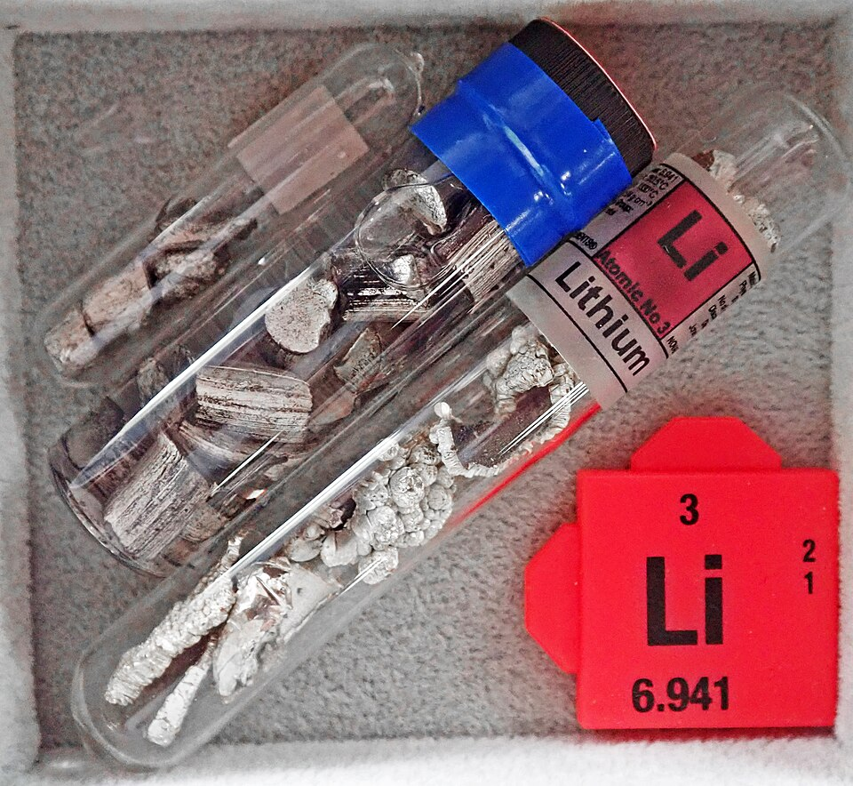
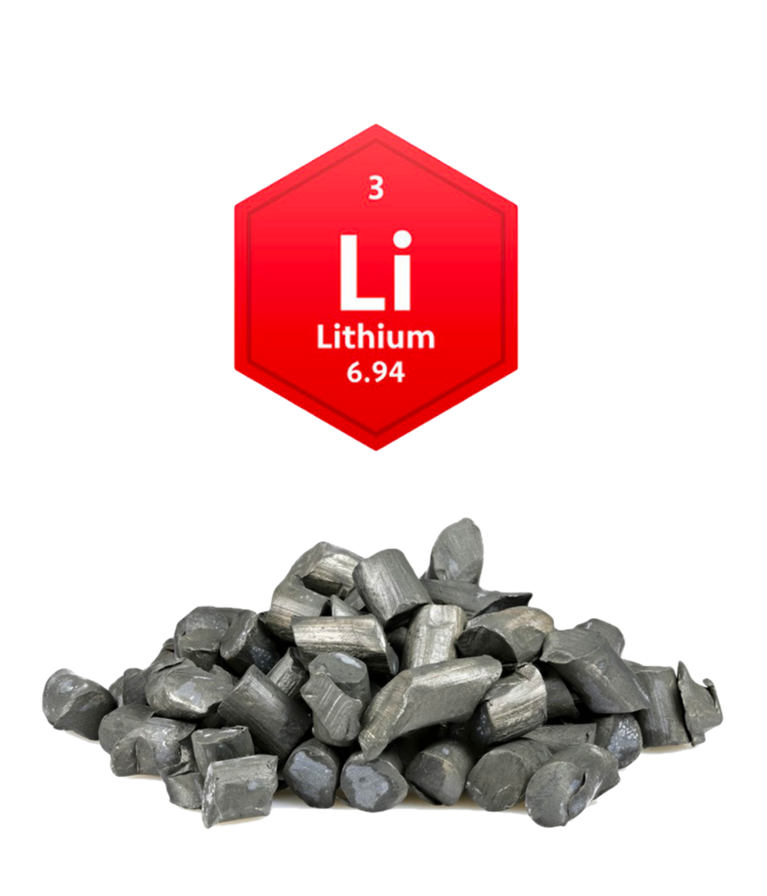
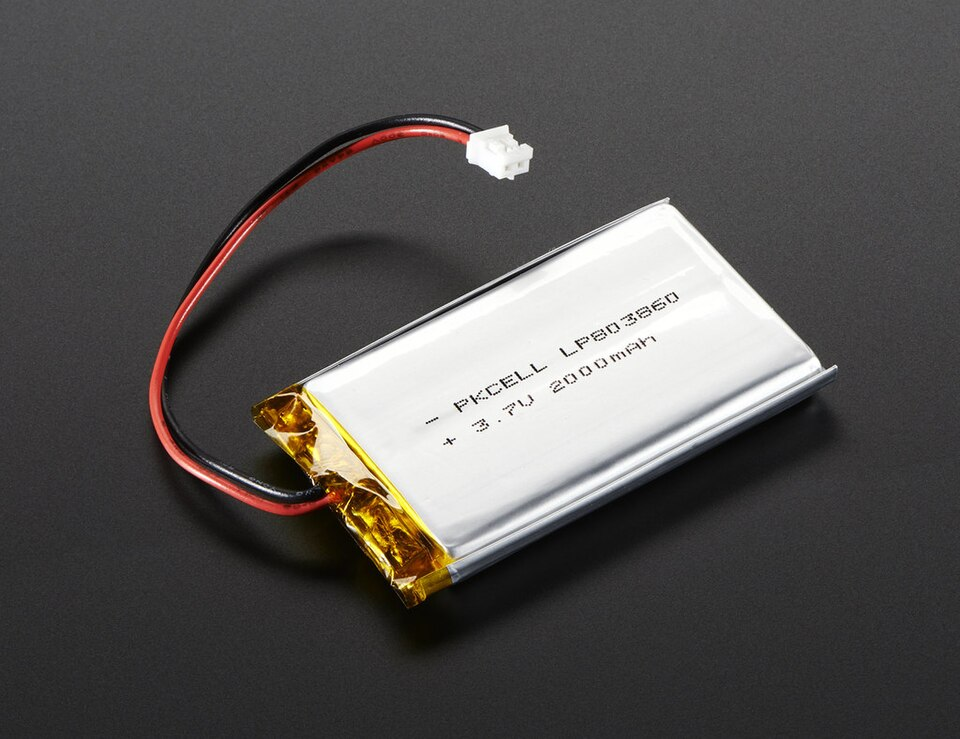

Lítio e Meio Ambiente: O que acontece por trás da produção das baterias? Leia nossa análise completa na página de artigos.
LEIA SOBRE O MEIO AMBIENTEO QUE É O LÍTIO ?
O lítio é um metal leve e o mais eletropositivo dos elementos metálicos. Tem brilho prateado e é encontrado nas rochas magmáticas. O lítio não ocorre livre na natureza e, mesmo combinado, está longe de ser abundante. Na crosta terrestre, encontra-se bastante distribuído, sendo-lhe atribuída uma percentagem da ordem de 0,004%. Os compostos de lítio são obtidos nos minerais: espodumênio, lepidolita, ambligonita ou petalita, que são aluminossilicatos de lítio. Atualmente, as principais fontes de lítio são os evaporitos (salmouras com alto teor de lítio).
BRAGA, Paulo Fernando Almeida; SAMPAIO, João Alves. Capítulo 26: Lítio. In: LUZ, Adão B. da; LINS, Fernando A. Freitas (Eds.). Rochas e Minerais Industriais. 2. ed. Rio de Janeiro: CETEM/MCT, 2008. p. 585-603.

ONDE SE LÍTIO NA TECNOLOGIA ?
baterias secundárias. [...] Nos produtos para o consumidor final, a ênfase se mantém no lítio iônico, e o lítio-polímero, empregado em baterias secundárias. [...] Os eletrônicos portáteis concentrarão os segmentos de maior crescimento...
O lítio mudou a engenharia de portáteis por ser o metal mais leve e com maior capacidade de armazenar energia por volume, sendo aplicado em baterias recarregáveis de duas formas principais: as de Íons de Lítio (Li-Ion), usadas em notebooks tradicionais por oferecerem densidade energética massiva, e as de Polímero de Lítio (Li-Po), usadas em smartphones ultrafinos por permitirem formatos milimétricos em gel que reduzem o peso do chassi, sendo o elemento insubstituível para suprir processadores potentes sem comprometer a portabilidade do aparelho.
Capítulo 26: Lítio" – Paulo Fernando A. Braga e João Alves Sampaio (Rochas e Minerais Industriais, CETEM/2008).

COMO ISSO AFETA O MEIO AMBIENTE ?
As operações de beneficiamento dos minérios de lítio são muito dispendiosas, em função do baixo teor do metal. [...] No Brasil, a produção industrial de compostos de lítio é obtida diretamente do mineral espodumênio... O concentrado de lítio requer uma etapa específica de tratamento térmico (decrepitação) em fornos calcinadores rotativos a 1.000-1.100ºC. [...] A extração e o processamento de salmouras ricas em lítio utilizam métodos mais simples e mais baratos... no entanto, as salmouras são bombeadas para lagoas de evaporação na superfície.
A extração de lítio gera graves impactos ecológicos devido aos seus métodos agressivos: na mineração em rocha (como o espodumênio), exige a abertura de minas a céu aberto com explosivos e queima massiva de combustíveis em fornos industriais acima de 1.000°C, destruindo o solo e emitindo CO₂; já na extração por salmouras (nos desertos de sal), o bombeamento de milhões de litros de água subterrânea para lagoas de evaporação esvazia os lençóis freáticos e seca poços de água doce das comunidades locais; além disso, o descarte incorreto dessas baterias no fim da vida útil gera lixo eletrônico tóxico que contamina solos e rios de forma prolongada.
Capítulo 26: Lítio" – Paulo Fernando A. Braga e João Alves Sampaio (Rochas e Minerais Industriais, CETEM/2008).

DESCUBRA MAIS SOBRE NOSSO PROJETO
SOBRE NOSSO TIME
Conheça os profissionais, cientistas e mentes brilhantes por trás de cada etapa do desenvolvimento do nosso projeto.
VEJA NOSSA PESQUISA
Explore nossa metodologia, os objetivos de campo e as investigações científicas que guiam nossas descobertas.
LEIA NOSSOS ARTIGOS
O lítio mudou a engenharia de portáteis por ser leve e armazenar muita energia, mas sua extração gera sérios impactos ecológicos.
LEIA OS DADOS
Acesse relatórios técnicos, estatísticas de mercado e gráficos consolidados sobre a mineração e suas consequências mundiais.
CONTATE NOSSA EQUIPE
Ficou com alguma dúvida, quer sugerir parcerias ou falar com nosso suporte? Entre em contato conosco agora mesmo.